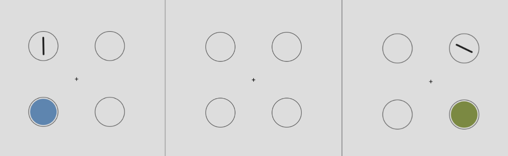
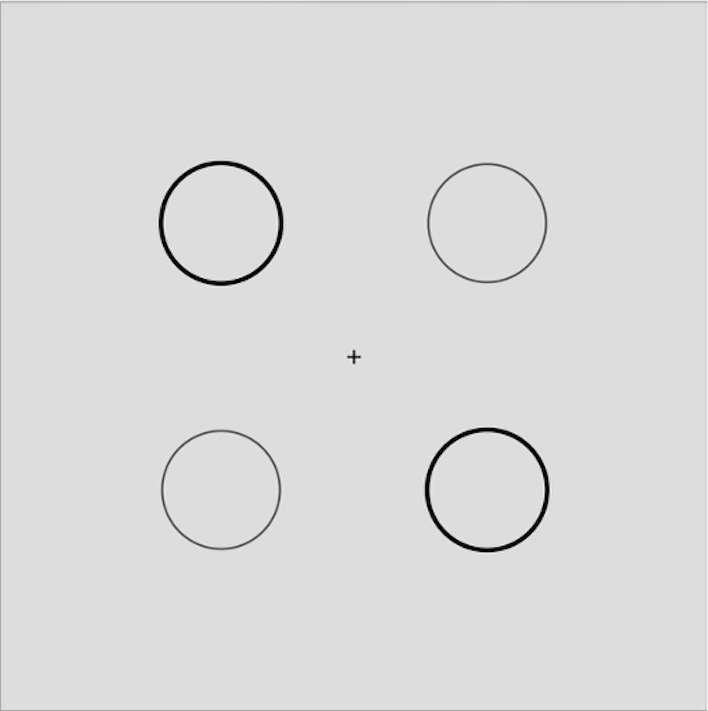
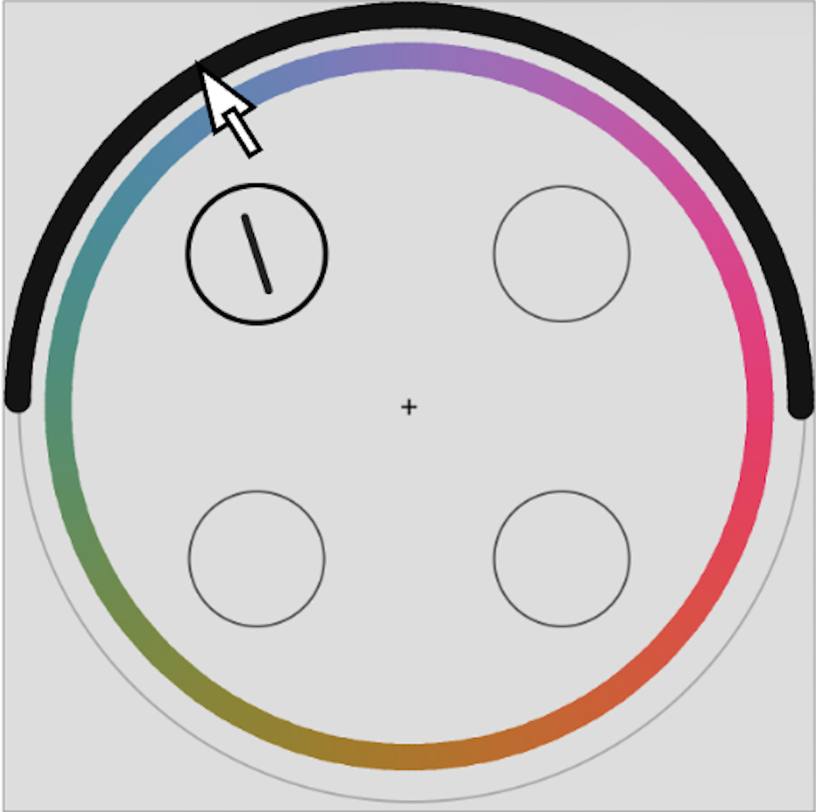

<!DOCTYPE html>
<html lang="en">
<head>
    <meta charset="UTF-8">
    <title>Retrocue Memory Experiment</title>

    <script src="https://ajax.googleapis.com/ajax/libs/jquery/1.10.2/jquery.min.js"></script>
    <script src="https://unpkg.com/jspsych@7.3.4"></script>
    <script src="https://unpkg.com/@jspsych-contrib/plugin-pipe"></script>
    <script src="https://unpkg.com/@jspsych/plugin-fullscreen@1.2.1"></script>
    <script src="https://unpkg.com/@jspsych/plugin-instructions@1.1.4"></script>
    <script src="https://unpkg.com/@jspsych/plugin-html-button-response@1.2.0"></script>
    <script src="https://unpkg.com/@jspsych/plugin-html-keyboard-response@1.2.0"></script>
    <script src="https://unpkg.com/@jspsych/plugin-survey-text@1.1.4"></script>
    <script src="https://unpkg.com/@jspsych/plugin-call-function@1.1.3"></script>

    <script src="jspsych_lib/mm_chunking.js"></script>
    <link href="jspsych_lib/jspsych.css" rel="stylesheet" type="text/css">


    <style>
        body { font-family: Georgia, serif; }
        #jspsych-content { background: #f4f4f4; }
        .consent-box {
            max-height: 300px; overflow-y: scroll;
            border: 1px solid #aaa; padding: 12px;
            font-size: 13px; text-align: left;
            background: #fff; margin: 12px 0;
        }
        .block-header {
            font-size: 18px; font-weight: bold;
            margin-bottom: 8px; color: #222;
        }
    </style>
</head>
<body></body>

<script>

/* Init jsPsych */
const jsPsych = initJsPsych({
    show_progress_bar: true,
    auto_update_progress_bar: false,
    on_finish: () => {
        // Redirect to SONA completion URL
        // Replace YOUR_SONA_CREDIT_TOKEN with your actual token
        const sona_url = `https://ucsd.sona-systems.com/webstudy_credit.aspx?experiment_id=3108&credit_token=3974845ab68c4a63a156799454da879b&survey_code=${raw_sona_id}`;
        window.location = sona_url;
    }
});

// Generate a truly random participant ID
const unique_participant_id = jsPsych.randomization.randomID(10);
const filename = `mm_chunking_v1_${unique_participant_id}.csv`;
jsPsych.data.addProperties({ unique_participant_id });

// Get the SONA id from url parameters
const url_params = new URLSearchParams(window.location.search);
const raw_sona_id = url_params.get('participant');
if (raw_sona_id){
    jsPsych.data.addProperties({ raw_sona_id });
}

const DEBUG = {
      enabled: false,
      max_blocks: 1 // do only first ${max_blocks} blocks
    };

// Initialize timeline
const timeline = [];


/* ======================================================================
   TRIAL GENERATION LOGIC
   Returns jsPsych timeline variables for a given block type.
   ====================================================================== */

/**
 * Build stim_types and retrocue_indices for each block type.
 *
 * Block type naming convention: <feature>_<cue_structure>
 *   feature:       color | orientation | mixed
 *   cue_structure: within (cue both from same temporal set)
 *                  across (cue one from each temporal set)
 *
 * With set_size = 4 (items 0,1 = set 1; items 2,3 = set 2):
 *   within_set1 → retrocue_indices [0,1]   (both from set 1)
 *   within_set2 → retrocue_indices [2,3]   (both from set 2)
 *   across      → retrocue_indices [0,2] or [1,3] or [0,3] or [1,2]
 *                 (one from each set)
 *
 * probe_index: which of the two cued items is probed (0 or 1).
 */
function buildTrialVariables(blockType, nTrialsPerCell) {
    const vars = [];

    const [feature, cueStructure] = blockType.split('_');

    const getStimTypes = (feature) => {
        if (feature === 'color')       return ['color', 'color', 'color', 'color'];
        
        if (feature === 'orientation') return ['orientation', 'orientation', 'orientation', 'orientation'];
        
        if (feature === 'homogenous'){ 
            if (Math.random() < 0.5) {
                return ['color', 'color', 'orientation', 'orientation'];
            } else {
                return ['orientation', 'orientation', 'color', 'color'];
            }
        } // same category within each group

        // heterogenous: different cateogory within each group
        return ["color", "orientation", "color", "orientation"]; 
    };

    const stimTypes = getStimTypes(feature);

    // Within: cue both items from the same temporal set
    // Across: cue one item from each temporal set
    const retrocuePairs = cueStructure === 'within'
        ? [ { rc: [0, 1] }, { rc: [2, 3] } ]
        : [ { rc: [0, 2] }, { rc: [1, 3] } ];

    for (const pair of retrocuePairs) {
        for (const probeIdx of [0, 1]) {
            for (let t = 0; t < nTrialsPerCell; t++) {
                vars.push({
                    stim_types:       stimTypes,
                    retrocue_indices: pair.rc,
                    probe_index:      probeIdx,
                    block_type:       blockType,
                });
            }
        }
    }
    return vars;
}

// all trial types
// color_within:
// color_across:
// orientation_within: 
// etc
const all_trial_types = [
    'color_within',
    'color_across',
    'orientation_within',
    'orientation_across',
    'homogenous_within',
    'homogenous_across',
    'heterogenous_within',
    'heterogenous_across',
];

// how many trials per cell do we want?
const nTrialsPerCell = 1; // 
const total_trials = nTrialsPerCell*all_trial_types.length*2*2; // nTrialsPerCell * 8 trial types * 2 retrocue pair options * 2 probe options

const allTrialVars = jsPsych.randomization.shuffle(
    all_trial_types.flatMap(bt => buildTrialVariables(bt, nTrialsPerCell))
);

// Split into blocks of 32
let blocks = [];
const blockSize = 32;
if (total_trials % blockSize != 0){
    throw new Error("Your trial numbers are not divisible!");
}

for (let i = 0; i < allTrialVars.length; i += blockSize) {
    blocks.push(allTrialVars.slice(i, i + blockSize));
}

if (DEBUG.enabled) {
    blocks = blocks.slice(0, DEBUG.max_blocks);
}

var trial_count = 0;
function update_progress_bar() {
    trial_count = trial_count + 1;
    jsPsych.setProgressBar(trial_count/total_trials);
}

timeline.push({
    type: jsPsychInstructions,
    pages: ['<p> Welcome to this experiment!</p>',
        '<p> In this experiment, you will be briefly remembering some colors and line orientations. </p><p> You will complete 320 trials, each of which lasts around 5 seconds. These trials will be split across eight blocks, and you can feel free to take breaks in between blocks. The entire experiment should not last longer than one hour. </p><p> <strong> Please do not participate if you do not have normal color vision. <strong> </p>',
        '<p> Before each trial starts, you will see four placeholder circles. Shortly after, two of these four circles will be filled by colors of various shades, or lines of various orientations, or a combination of a shade and an orientation. Then, the two items in these two circles will dissapear, and two new items will appear in the other two circles. <p><p> Your task is to remember the item that was shown in each location. If it was a color, remember its shade. If it was a line, remember its orientation. Please pay close attention throughout the entire trial, since the items will be presented very briefly. <p>',
        '<p> For example, you may see a trial like this. The two circles on the left are first filled by one color and one orientation. Then, after a delay, where everything dissapears, the two circles on the right are then filled by one color and one orientation. </p><p align="center"></p>',
        '<p> During the task, you may be tempted to remember the colors by repeating the name of that color to yourself. However, we are interested in your visual, not verbal, memory, so please avoid doing so. If you still find yourself from repeating the name of a color to yourself, we suggest you repeat the word "the" over and over again. This will help prevent you from using words to describe and remember the colors. </p>',
        '<p> After all of the four items are presented, there will be a "cue" period, where two of the four placeholder circles will have a darker border. Going forward, you will only need to continue remembering the items in those two circles, so you can essentially "drop" the items from the other two circles from your memory. To enhance your memory performance, please do your best to take advantage of this fact, as opposed to remembering all four items throughout the entire trial. </p>',
        '<p> Continuing our previous example, the top left and bottom right circles have been cued. This means we only need to remember the items presented in these two circles (in this case, it was a line that points upwards and slightly towards the left for the top left circle, and a color that was light green in the bottom right circle) </p><p align="center"></p>',
        '<p> These "cues" will then dissapear, and almost immediately after, one of the two placeholder circles that were just cued will be darkened again. Your task will be to report the shade of the color, or orientation of the bar, that was shown in that location. </p><p> This will be done through two reponse wheels that now appear. To report the shade of a color, you can hover over the corresponding color on the 360 degrees color wheel. Once you find the color that you believe matches the color that was presented in the darkened location, you can click on that color on the wheel to lock in your answer. Similarly, to report an orientation, you click on the corresponding orientation on the orientation wheel (which is out of 180 degrees, since lines are symmetrical). </p>',
        '<p> To finish our previous example, let us say the top left circle was the one that you are asked to respond for. Then, you would drag your mouse to the region on the orientation wheel (the black one, that spans across 180 degrees) that corresponds to the orientation the line was pointing towards. Once you are satisfied, you can click on the orientation wheel to lock in your response. If you are supposed to report a color, you should do the same thing, except hover over and click on the color wheel. </p><p align="center"></p><p> Very importantly, please indicate your response as quickly as possible. <strong>You will only be given up to 3 seconds to do so.</strong> Therefore, you do not need to strive for perfection, but rather, please click on the wheels once you are relatively satisfied with your answer. </p>',
        '<p> Once you click on the "continue" button, the first trial will start. Good luck! </p>'
    ],
    show_clickable_nav: true,
    button_label_next: 'Continue',
});

// Add each block with a break screen after (except the last)
blocks.forEach((blockVars, blockIndex) => {
    timeline.push({
        timeline: [{
            type:             jsPsychMMChunking,
            stim_types:       jsPsych.timelineVariable('stim_types'),
            retrocue_indices: jsPsych.timelineVariable('retrocue_indices'),
            probe_index:      jsPsych.timelineVariable('probe_index'),
            block_type:       jsPsych.timelineVariable('block_type'),
            is_practice:      false,
            feedback:         true,
            on_finish:        update_progress_bar,
        }],
        timeline_variables: blockVars,
        randomize_order: false, // it's false because we already randomized in buildTrialVars
    });

    if (blockIndex < blocks.length - 1) {
        timeline.push({
            type: jsPsychHtmlButtonResponse,
            stimulus: `<p>You've completed block ${blockIndex + 1} of ${blocks.length}.</p>
                       <p>Take a short break whenever you're ready.</p>`,
            choices: ['Continue'],
        });
    }
});


/* ============================
   END 
   ============================ */

timeline.push({
    type: jsPsychInstructions,
    pages: ['<p>Thank you for participating!</p><p>Press "Finish" to be taken back to SONA</p>'],
    show_clickable_nav: true,
    button_label_next: 'Back to SONA',
});

timeline.push({
    type: jsPsychPipe,
    action: "save",
    experiment_id: "LZhfcBUZnJmU",
    filename: filename,
    data_string: () => jsPsych.data.get().csv()
});
/* ---- Run ---- */
jsPsych.run(timeline);


</script>
</html>
